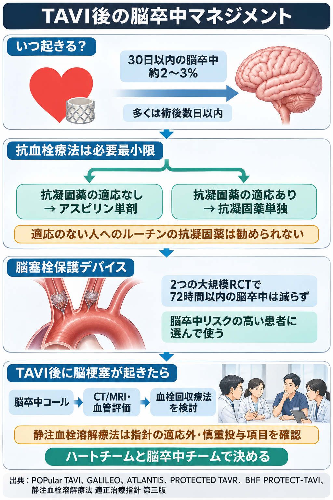

TAVI後の脳卒中マネジメント
TAVI後の脳卒中の頻度と時期、抗血栓療法の選び方、脳塞栓保護デバイスの位置づけ、TAVI後に脳梗塞が起きたときの対応を1枚にまとめた図です。
画像をクリック／タップすると原寸で表示します。

図の要点
- 抗血栓療法は必要最小限：POPular TAVI試験に基づき、抗凝固薬の適応がなければアスピリン単剤、適応があれば抗凝固薬単独が基本です。GALILEO・ATLANTIS試験から、抗凝固薬の適応のない人へのルーチンの抗凝固薬は勧められません。
- 脳塞栓保護デバイス：PROTECTED TAVR試験とBHF PROTECT-TAVI試験で、72時間以内の脳卒中は有意に減りませんでした。
- 発症時の対応：静注血栓溶解療法は、国内の適正治療指針の適応外・慎重投与項目を確認し、ハートチームと脳卒中チームで判断します。
出典と注意
POPular TAVI、GALILEO、ATLANTIS、PROTECTED TAVR、BHF PROTECT-TAVI、米国TVTレジストリ、SwissTAVIレジストリ、日本脳卒中学会『静注血栓溶解（rt-PA）療法 適正治療指針 第三版』に基づいて作成。一般的な医学情報であり、個々の治療方針は主治医と相談してください。